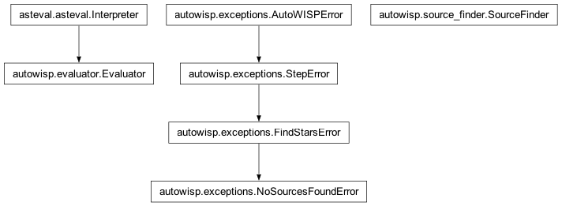

autowisp.source_finder module
Class Inheritance Diagram

Uniform interface for source extractoin using several methods.
- class autowisp.source_finder.SourceFinder(*, tool='hatphot', brightness_threshold=10, brightness_quantile=0.999, brightness_quantile_scale=1.0, filter_sources='True', max_sources=0, allow_overwrite=False, allow_dir_creation=False, always_return_sources=False)[source]
Bases:
objectFind sources in an image of the night sky and report properties.
- __call__(fits_fname, source_fname=None, **configuration)[source]
Extract the sources from the given frame and save or return them.
- Parameters:
- Returns:
The extracted source from the image, if source_fname was None.
- Return type:
field array or None
- __init__(*, tool='hatphot', brightness_threshold=10, brightness_quantile=0.999, brightness_quantile_scale=1.0, filter_sources='True', max_sources=0, allow_overwrite=False, allow_dir_creation=False, always_return_sources=False)[source]
Prepare to use the specified tool and define faint limit.